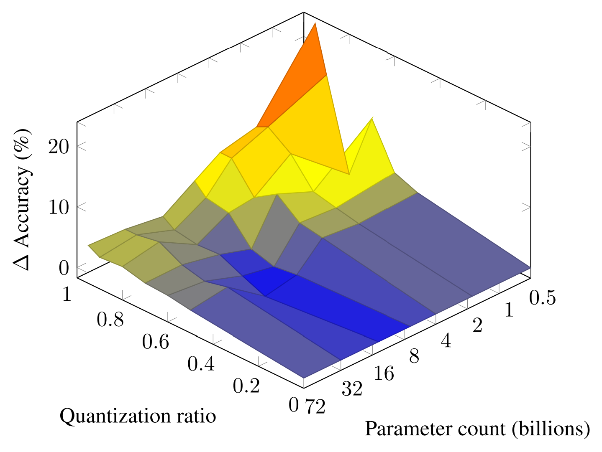
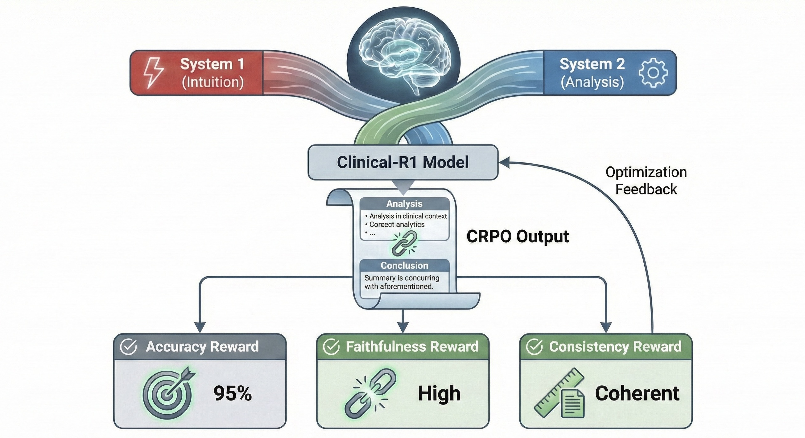
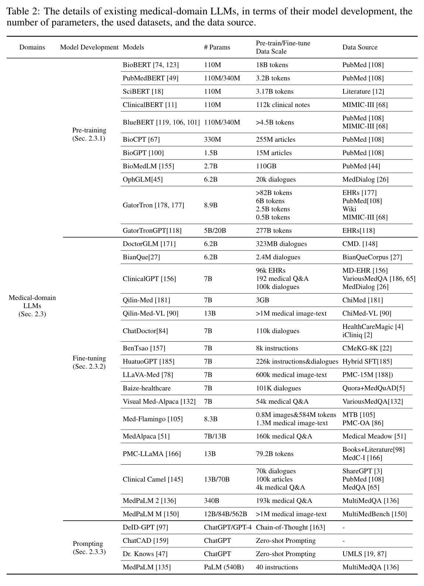
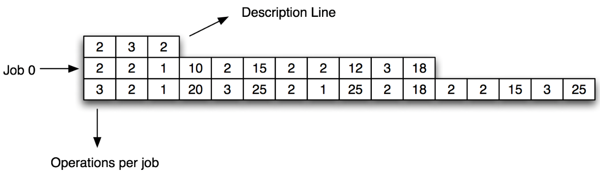

Boyang Gu
DPhil Student, University of Oxford · Research Intern, MIT CSAIL
I am a DPhil student in the Department of Psychiatry at the University of Oxford. I am also continuing my research internship at the Computer Science and Artificial Intelligence Laboratory (CSAIL), Massachusetts Institute of Technology (MIT).
Previously, I earned an MSc in Computing (Artificial Intelligence and Machine Learning) and an MSci in Mathematics from Imperial College London.
My research focuses on reliable and evidence-grounded AI for healthcare, including clinical natural language processing, causal inference from longitudinal electronic health records, and verifiable reasoning in medical language models. I am also interested in language models for reproducible scientific workflows. I welcome research collaborations.

Research Interests
Clinical NLP
Reliable Medical AI
Causal Inference
Scientific Workflows
News
- Started DPhil at the University of Oxford
- Scaling Laws for Mixed Quantization accepted as EMNLP Oral
Publications

Clinical-R1: Empowering Large Language Models for Faithful and Comprehensive Reasoning with Clinical Objective Relative Policy Optimization
Proceedings of the Second AAAI Bridge Program on AI for Medicine and Healthcare (PMLR), 2026


Reinforcement Learning Approach for Multi-Agent Flexible Scheduling Problems
3rd International Conference on Signal Processing and Machine Learning (CONF-SPML), 2023